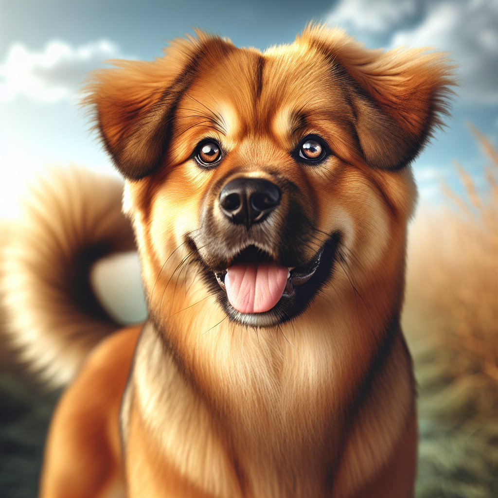
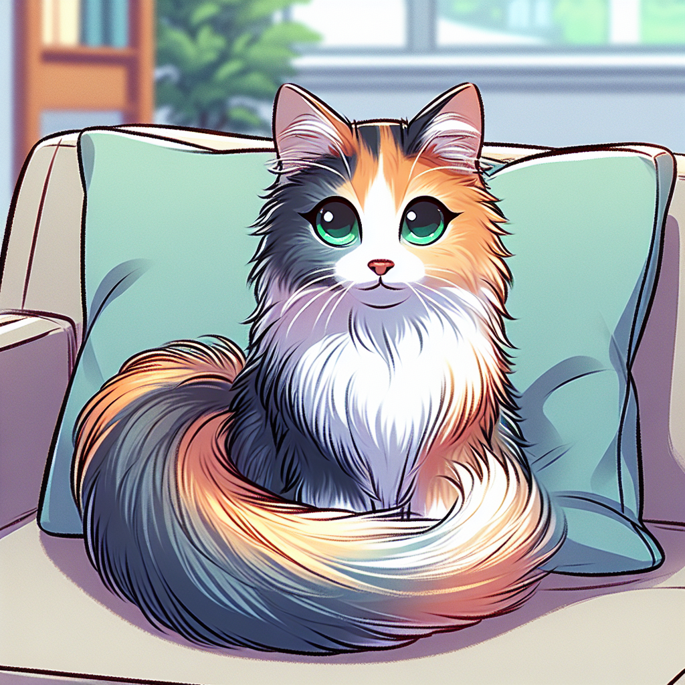
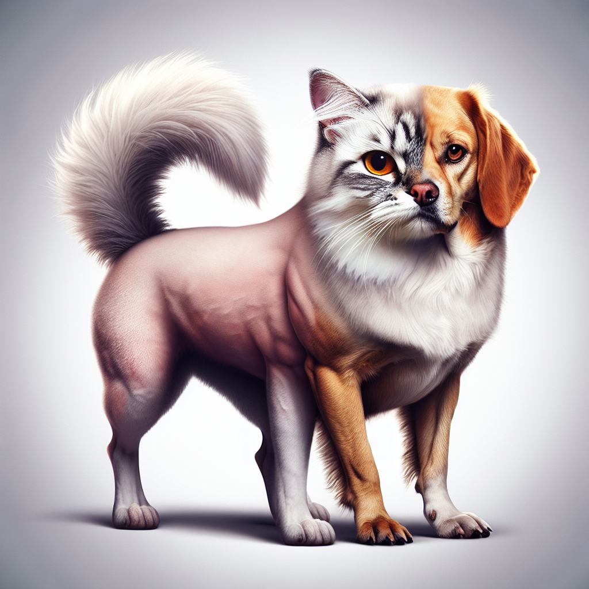
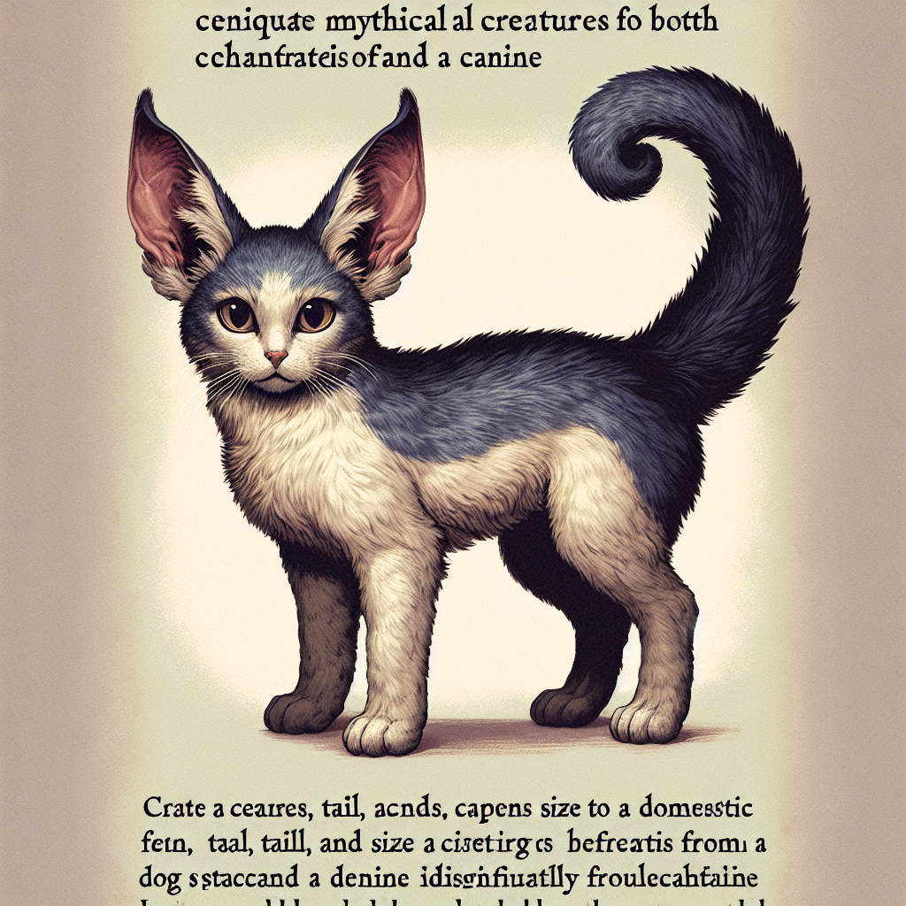
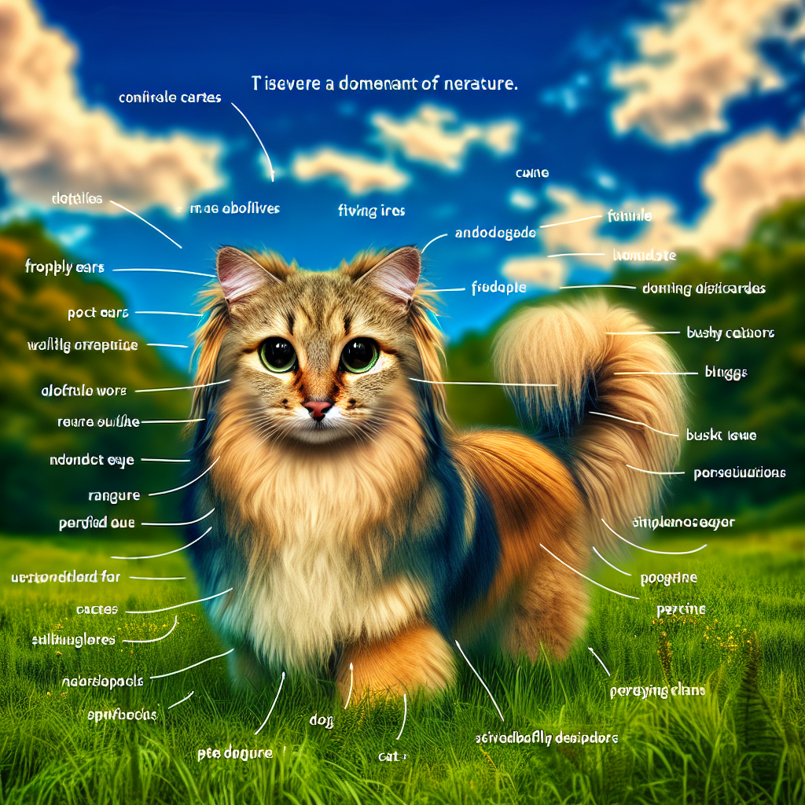

Asking GTP-4 to Make Pictures of Cats and Dogs (and the Creature In-Between)
Below are two AI-generated pictures of cats and dogs... They're both rather standard AI-generated images.
 For the next (forthcoming) project, I'm going to do an experiment where I ask GPT-4 to generate picutres of a create that is half-dog and half-cat, and then ask an image classifier to try to classify the image. If the image is truly "half" of each, then the activations both the cat and dog class should be about 50%. Below is an image I asked ChatGPT to generate which is a creature who is 50% dog and 50% cat:
Additionally, I have it try to classify images that are "75% dog and 25% cat" and vice-versa. Here are a few examples.
Mostly a cat and slightly a dog:
Mostly a dog and slightly a cat:
